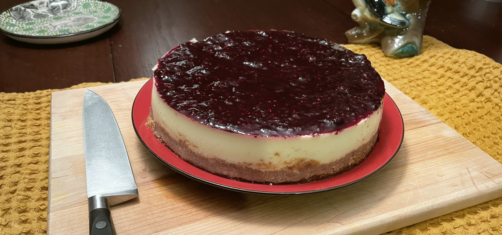
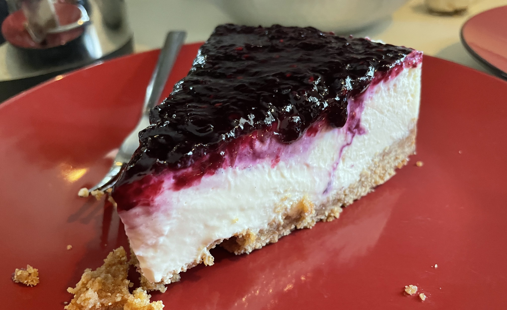

Cheesecake Recipe
Preparations
Tools
- 9 inch springform pan
- A mixer or food processor
- A pot or pan that can fit the springform pan inside.
Grocery
- 24oz full-fat cream cheese
- 8oz sour cream or yogurt
- Unsalted butter
- Eggs
- Berries
- vanilla extract
- Sugar
- Cornstarch
- Graham crackers
- Lemon juice
- Aluminum foil (18 in. preferred over 12 in.)
Before you begin
- The cold ingredients for the filling should be left out until room temperature before starting.
- Once ready to begin: Pre-heat the oven to 350f and grease the springform pan.
- If you want to include berry sauce in the filling itself you should work on the sauce before the filling.
Make the crust
| Qty. | Ingredient |
|---|
| 1 1/2 cups | graham crackers |
| 1 1/4 cup | sugar |
| 5 tablespoons | unsalted butter |
- Break the graham crackers into crumbs. I do this with a food processor.
- Mix in melted butter and sugar.
- Pack to the bottom of the spring form pan in an even layer.
- Bake the crust at 350f for 8 minutes.
- Remove from the oven and let it cool completely.
Tip: A cup with a flat bottom can help make an flat compact layer of crust.
Make the filling
| Qty. | Ingredient |
|---|
| 24 oz | full fat cream cheese |
| 1 cup | sour cream or yogurt |
| 1 cup | sugar |
| 2 teaspoons | vanilla extract |
| 3 | eggs |
- Beat the cream cheese and sugar together until smooth and creamy (about 3 minutes)
- Add sour cream and vanilla until combined.
- On a low speed add the eggs one at a time until just blended. Do not over-mix.
Bake
Before starting make sure the crust has completely cooled and the oven is pre-heated to 325f.
- Begin boiling water now for step 5.
- Wrap the springform pan in about 3 layers of aluminum foil to prevent water from leaking in. Wider aluminum is preferred.
- Put the springform pan in pan (or other oven safe basin).
- Add the filling to the springform pan on top of the crust.
- If you want you can also add the berry sauce inside the filling as well and use a knife to swirl in decorative patterns.
- Add boiling water to the outer pan until it raises 1 inch up the sides of the springform pan.
- Bake for 90 minutes at 325f.
- At the end the top should be jiggly but not wet.
- Turn off the oven and let cool with the door open for 1 hour.
- Remove from the oven and allow to cool completely at room temperature.
Make the berry sauce
| Qty. | Ingredient |
|---|
| 2 teaspoons | cornstarch |
| 1 teaspoon | lemonjuice |
| 1 tablespoon | warm water |
| 2 cups | berries |
| 2 tablespoons | sugar |
- Wisk cornstarch, lemon juice and warm water together in a small bowl until combined and set aside.
- Warm the berries and sugar together in a small saucepan over medium heat.
- Stir continuously until the juices begin to release (about 3 minutes).
- Add the cornstarch mixture and continue to stir for another 2-3 minutes. Mash the berries as you stir.
Depending on your preference: you can strain the juices from the berries before adding the cornstarch.
Finishing details
The cake should be left to set in the fridge for at least 12 hours. The earlier you eat it the more it will taste like a block of cream cheese and less like a cake. I would advise waiting 2 full days for it to set completely.
At some point between the cake having cooled and serving: top with the berry sauce however you like. I prefer a completely smooth and even layer.
Serving is best done with a sharp knife cleaned in warm water between each slice.
Enjoy.
